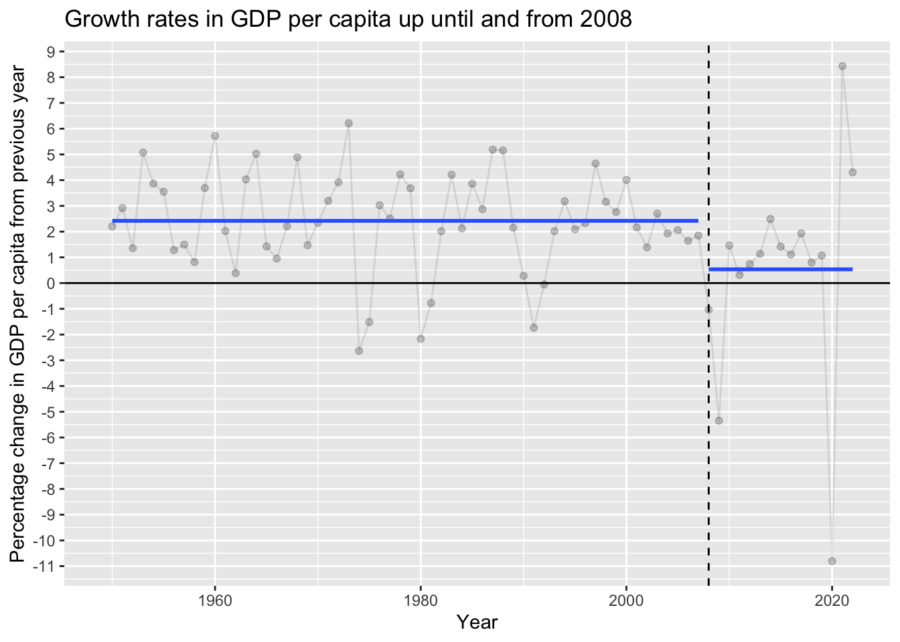

On the lagged link between economic growth and longevity growth
economic growth
mortality trends
Author
Jon Minton
Published
April 25, 2024
Background
I’m back (writing 23 April) from a public health seminar on the relationship between the economy, poverty and health. Lots of food for thought. But the main thing I’m thinking about was an argument put forward by one of the speakers, which seemed to go along the following lines:
Compared with the late 1990s, GDP per capita in the UK is now around 25% higher. Meanwhile, life expectancy is falling and relative poverty rates are getting worse. So these adverse health and poverty changes don’t mainly seem to be due to how big the economy is, or how fast it’s growing. Instead it seems to be more about how we make sure the economy works for us, rather than us for it, and so there should be more focus on making sure more people have more equal shares of the pie, rather than in simply making the pie bigger.
I agree with the sentiment that greater equality of resourcing - reductions in both income and asset inequalities - is important. 1,2 But at the same time I think this interpretation greatly undervalues the importance of general economic growth as a determinant of subsequent stalling in longevity progress. Instead, I believe something like:
Slowdowns in the fundamentals of economic growth rates in the UK may be the fundamental cause of subsequent slowdowns in growth in longevity, albeit in large part through the indirect (and avoidable) path of economic, social and political mismanagement known broadly as ‘austerity’.
Slowing economic growth fundamentals
Many years ago, through the blog of Simon Wren-Lewis, I became aware of the way that, following the 2008 Global Financial Crisis (GFC), the long-term fundamentals of UK economic growth rates appears to have, for want of a better term, broken. Wren-Lewis has updated a graph of actual UK GDP per capita, against levels of GDP per capita that would have been expected if long-term trends had continued, a number of times. The most recent version of this I can find is from this post, with the figure itself linked to below:
UK GDP per capita and trend (pre-GFC)
I found an earlier version of this graph so extraordinary that I decided to look for the source data and try to replicate it:
My version of UK GDP per capita and trend (pre-GFC)
This version of the graph was up to 2016. Even then, the discrepancy between the amount per capita achieved in 2016, and the amount expected if more than half a century’s standard rate of economic growth had continued, was extraordinary: around £8,000 per person.
library(tidyverse)library(broom)library(scales)gdp_data_ons <-read_csv("https://www.ons.gov.uk/generator?format=csv&uri=/economy/grossdomesticproductgdp/timeseries/abmi/qna", skip =9, col_names =c("year", "gdp"))# Now UK capita, using HMD as data go back furtherhmd_pop <-read_table( here::here("posts", "still-the-economy", "hmd_uk_pop.tsv"), skip =2 ) |>select(year = Year, total = Total) |>group_by(year) |>summarise(population =sum(total)) |>ungroup() gdp_per_cap <- hmd_pop |>inner_join( gdp_data_ons |>mutate(year =as.numeric(year)) ) |>mutate(gdp_per_cap =10^6* (gdp / population))# gdp_per_cap# # gdp_per_cap %>% # gdp in millions# # qplot(x = year, y = gdp_per_cap, data = .)gdp_per_cap %>%mutate(log_pcgdp =log(gdp_per_cap)) %>%filter(year <2008) %>%lm(log_pcgdp ~ year, data = .) %>%tidy() -> coeffs# coeffsgdp_per_cap %>%mutate(predicted_gdp_per_cap =exp(coeffs[1,2] |>pull(estimate) + (coeffs[2, 2] |>pull(estimate) )* year) ) %>%ggplot(aes(x = year)) +geom_point(aes(y = gdp_per_cap)) +geom_line(aes(y = predicted_gdp_per_cap), linetype ="dashed") +geom_ribbon(aes(ymin =ifelse(gdp_per_cap < predicted_gdp_per_cap, gdp_per_cap, predicted_gdp_per_cap),ymax =ifelse(gdp_per_cap > predicted_gdp_per_cap, gdp_per_cap, predicted_gdp_per_cap) ),fill ="lightgrey", alpha =0.4, colour =NA ) +scale_x_continuous(limits =c(1950, 2025), breaks =seq(1950, 2030, by =10)) +scale_y_continuous(limits =c(0, 50000), breaks =seq(5000, 50000, by =5000), labels = comma) +labs(y ="GDP per capita in £", x ="Year") +theme_minimal() +geom_vline(xintercept =2008, linetype ="dashed") -> long_term_gdp_trendlong_term_gdp_trend
We can see here just how large the gap between observed GDP per capita, and that which would have been expected if the long-term trend which existed between 1950 to 2007 had continued. By 2022, the last year in the series, the observed GDP per capita was under £35,000, whereas the projected rate for the same year, if the growth fundamentals that had held for over half a century previous had continued, would have been over £45,000. A gap between expectation and reality of over £10,000, or around 30% of current values. 3
Another way of looking at this same data is in terms of percentage change in GDP per capita from the previous year.
Code
gdp_per_cap |>arrange(year) |>mutate(pct_change =100* ((gdp_per_cap -lag(gdp_per_cap)) /lag(gdp_per_cap)) ) |>mutate(time_group =ifelse(year <2008, "pre-2008", "2008+") ) |>ggplot(aes(year, pct_change)) +geom_point(alpha =0.2) +geom_line(alpha =0.1) +stat_smooth(aes(group = time_group), method ="lm", formula = y ~1, se =FALSE) +geom_hline(yintercept =0) +geom_vline(xintercept =2008, linetype ="dashed") +labs(x ='Year',y ='Percentage change in GDP per capita from previous year',title ="Growth rates in GDP per capita up until and from 2008" ) +scale_y_continuous(breaks =seq(-11, 9, by =1) )

Even with the sharpest annual recovery ever observed from 2020 to 2021, the average growth rate from 2008 remains a fraction of the level observed over the previous period of more than half a century.
Slowing longevity growth fundamentals
We can look at the corresponding trends in life expectancy at birth in a similar way.
Code
hmd_e0 <-read_table( here::here("posts", "still-the-economy", "hmd_uk_e0per.txt"), skip =2 ) |>select(year = Year, total = Total) hmd_e0 |>filter(year >=1950) |>ggplot(aes(year, total)) +geom_line() +expand_limits(y =0) +labs(x ="Year", y ="Life expectancy at birth", title ="Life expectancy at birth over time, UK",caption ="Source: Human Mortality Database" )
As with the economic growth rates, we can look at the ‘growth rate’ of longevity either in absolute annual changes:
Code
hmd_e0 |>filter(year >=1949) |>arrange(year) |>mutate(ch_e0 = total -lag(total)) |>ggplot(aes(year, ch_e0)) +geom_point(alpha =0.2) +geom_line(alpha =0.1) +geom_hline(yintercept =0) +stat_smooth(se =FALSE) +labs(x ="Year", y ="Change in life expectancy from previous year", title ="Change in annual life expectancy from previous year, in years, UK",subtitle ="Blue line: Loess smoother",caption ="Source: Human Mortality Database")
Or as a percentage change from the previous year:
Code
hmd_e0 |>filter(year >=1949) |>arrange(year) |>mutate(ch_e0_pct =100* (total -lag(total)) /lag(total)) |>ggplot(aes(year, ch_e0_pct)) +geom_point(alpha =0.2) +geom_line(alpha =0.1) +geom_hline(yintercept =0) +stat_smooth(se =FALSE) +labs(x ="Year", y ="% Change in life expectancy from previous year", title ="Change in annual life expectancy from previous year, percent, UK",subtitle ="Blue line: Loess smoother",caption ="Source: Human Mortality Database")
Either way, but perhaps even more clearly with the percentage graph, it is clear there has been a substantive decline in the fundamentals of longevity growth in the UK in recent years, much as there has been in the fundamentals of economic growth.
Within at a couple of papers, I investigated whether there is any clear evidence of a breakpoint in the longevity trends, much as there is a clear 2008 breakpoint in the economic growth trends. There does appear to be, but with 2012, rather than 2008, as the most likely breakpoint year. 4 Splitting the percent longevity growth trends into the pre 2012 and 2012+ periods gives the following average longevity growth trends:
Code
hmd_e0 |>filter(year >=1949) |>arrange(year) |>mutate(ch_e0_pct =100* (total -lag(total)) /lag(total)) |>mutate(period =ifelse(year <2012, "Pre 2012", "2012+")) |>ggplot(aes(year, ch_e0_pct)) +geom_point(alpha =0.2) +geom_line(alpha =0.1) +geom_hline(yintercept =0) +stat_smooth(aes(group = period), method ="lm", formula = y ~1, se =FALSE) +geom_vline(xintercept =2012, linetype ="dashed") +labs(x ="Year", y ="% Change in life expectancy from previous year", title ="Change in annual life expectancy from previous year, percent, UK",subtitle ="Blue line: Average % change before and from 2012",caption ="Source: Human Mortality Database")
The average longevity growth rate from 2012 onwards is negative. It appears that COVID-19 cannot explain the majority of this divergence from earlier trends:
Code
hmd_e0 |>filter(year >=1949) |>arrange(year) |>mutate(ch_e0_pct =100* (total -lag(total)) /lag(total)) |>mutate(period =ifelse(year <2012, "Pre 2012", "2012+")) |>filter(year !=2020) |>ggplot(aes(year, ch_e0_pct)) +geom_point(alpha =0.2) +geom_line(alpha =0.1) +geom_hline(yintercept =0) +stat_smooth(aes(group = period), method ="lm", formula = y ~1, se =FALSE) +geom_vline(xintercept =2012, linetype ="dashed") +labs(x ="Year", y ="% Change in life expectancy from previous year", title ="Change in annual life expectancy from previous year, percent, UK",subtitle ="Blue line: Average % change before and from 2012",caption ="Source: Human Mortality Database")
No. Even after removing the acute effects of COVID-19 in 2020, the new longevity growth rate is less than half that of the previous long term growth trend, much as after 2008, the new economic growth rate is less than half that of the previous long term growth trend.
Combined series
As both trends are now in percentages, let’s plot the two together:
If event X occurs before event Y, it’s definitely possible that event X caused event Y. In this case, event X is a substantial and apparently (but hopefully not) permanent downwards shift in the fundamentals of economic growth, and event Y is a substantial and possibly (but hopefully not) permanent downwards shift in the fundamentals of longevity growth.
Conceptual model
Does the apparent lag between the breaking of long term economic growth trends, and the breaking of long term longevity growth trends, strengthen or weaken any claim that the break in the former caused the latter? I think it potentially strengthens the claim, though possibly likely through some intermediate stages. In particular, I can imagine the four or so year lag being largely explained by something like the following.
Two things can be claimed about the above graph. Firstly, it’s too complex. Secondly, it’s too simple. Both are likely to be true.
What I’m trying to sketch out is the idea that the 2008 GFC may have had a small, short term direct effect on health, but to the extent it may have led to the sustained fall in longevity growth, it’s likely to be through other pathways whose effect have been more sustained.
In particular, the political choice to impose austerity, implemented in response to the GFC (and the public deficit caused by ‘bailing out the banks’), can plausibly have harmed the longevity growth fundamentals both through its effects on social care (less protected) and health care (more protected), and also through its effects on choking off the prospect of any return to previous levels of economic growth by weakening the economy even further.
Here we encounter one of the wicked feedback loops in the graph: Poorer economic growth leads to lower tax returns, higher budget debts and deficits, and so the justification for… yet more austerity. It’s this kind of feedback look, and the the cumulative effects each iteration on the loop has on longevity growth fundamentals, which I think may explain both why the post-2008 economic growth slowdown has been so sustained, and why the now-sustained longevity growth slowdown manifested a few years later.
And that’s just one of the feedback loops I’ve drawn in this graph. Due to the high levels of health related working age inactivity, I’ve also put a path between the post-2012 longevity growth trends, and the post-2008 economic growth trends. Without any further exogenous influence or political mismanagement, both fundamentals may now be mutually reinforcing and self-sustaining: a new normal.
Concluding thoughts
As mentioned at the start, the relationship between economic growth and longevity growth is something I’ve been thinking about a lot. Not just for the last few days, but for years. I don’t think the link between economic performance and health performance is focused on enough, often perhaps because people interested in public health and epidemiology may not be particularly interested in economics, and those interested in economics may not be particularly interested in public health and epidemiology. And with the exception of - say - infectious disease modelling, neither field tends to be particularly interested in reasoning through the dynamics of complex systems.
Both of these factors matter, I think, because the economic and longevity growth trends in the UK appear so similar, and because of the observation that we have seen an adverse shift in the fundamentals of two systems - economic growth and longevity growth - that for decades prior were remarkably stable over the longer term.
Imagine a marble on a thin conveyor belt, only slightly wider than it. The conveyor belt is on a tall plinth, gradually ascending like a reverse aqueduct, and either side of it are rail-like buffers. The effect of these buffers is to produce negative feedback, compensating for any lateral forces, at right angles to the direction of the belt, and so ensuring even moderate perturbations affecting the marble do little to affect its longer-term trajectory.
Imagine now an especially large lateral force, causing audible strain and visible cracks in the compensatory buffer. And now imagine the engineer’s response is to remove this buffer (the red section in the sketch below) rather than strenghen it, or perhaps to remove upstream sections of the buffer to provide material to reinforce the recently caused damage.
Marble Pillars
Without the buffer, the effect of a lateral force on the marble can suddenly become much greater, causing the marble to leave the conveyor belt, leave the plinth, and roll off to the side. In the sketch I imagine a ramp adjacent to the taller plinth. Once the marble begins entry onto this ramp, its downward momentum becomes self-sustaining, until it reaches a new plateau: plinth B. Plinth B contains another conveyor belt, and is also ascending. At some point in the future the marble will reach the height on runner B that it used to be at on plinth A. But at each and every time the marble’s height while on plinth B will never be as high as it would have been if it were still on plinth A.
When I’m thinking about what a change in the fundamentals of growth (whether whether economic or longevity), I’m imagining something like a transition from the plinth A to plinth B. The UK’s changing from pillar A to pillar B wasn’t inevitable: political choices were made to remove the guard rails, and move us off a path that we’d been following for most people’s working lives. But once the buffer was removed, the damage may well have been self-sustaining and permanent.
In short: I think it very plausible that decline in economic growth caused decline in longevity growth, as well as further decline in economic growth (which caused further decline in longevity growth, which then has started to cause further decline in economic growth).
But it didn’t have to cause this change in the fundamentals.
That was a political choice.
Footnotes
Though on asset inequality it should be noted that one of the speakers was funded by a poverty research organisation that is itself funded by an endowment from a 19th century to early 20th century industrialist, and one of the future speakers is also from an organisation funded and named after another 19th to early 20th century industrialist. So in a sense such charitable research organisations, bringing attention and raising awareness about inequalities in income, assets, and opportunities, could not have existed but for… massive inequalities in income, assets and opportunities!↩︎
Incidentally, I think the most politically robust argument in favour of this position isn’t about fairness - both the left and right have fundamentally different concepts of fairness, so the fairness argument for redistribution (‘How can those people be allowed to be so rich when these people are allowed to be so poor?’) only resonates with one political group - but instead about efficiency. Because of the marginal utility of income the amount of additional improvement in wellbeing, happiness, health and opportunity that £1 can bring to someone with £10 or £100 is much greater than for someone with £10,000 or £100,000. For someone from an economic left-wing perspective, there’s no trade-off in greater redistribution between fairness and efficiency: more equal outcomes is both more fair and more efficient. But for someone from a right-leaning perspective there is a trade-off. And so I think focusing on efficiency rather than fairness, and demonstrating that even if one considers progressive taxation ‘unfair’ the net benefit to society is positive, is a more universally persuasive political argument, even if it tugs at left-wing heartstrings less strongly than the fairness argument.↩︎
Note from Claude: The Institute for Fiscal Studies confirms this persistent GDP shortfall, reporting that as of 2024, UK GDP per capita is nearly £11,000 lower than it would have been had pre-crisis trends continued. This represents growth of only 0.7% per year from 2007 to 2024, compared to 2.5% during 1990-2007. The IFS notes that productivity per hour grew by just 0.3% annually between 2008-2018 versus a historical trend of 2% per year, and that average wages adjusted for inflation in 2024 were roughly the same as in 2008 - representing perhaps the slowest earnings growth in over 200 years. See Why isn’t Britain getting richer anymore? - IFS and A decade and a half of historically poor growth - IFS.↩︎
Note from Claude: Extensive research supports a 2012 breakpoint in UK life expectancy trends. Healthy life expectancy increased markedly between 1995 and 2009, then decreased by approximately 2 years between 2011 and 2019. The impact was particularly severe in deprived areas, where mortality rates actually increased. Research estimated approximately 335,000 excess deaths occurred between 2012-2019 compared to expectations based on 1981-2011 trends. Multiple studies link this stalling to austerity measures: the Glasgow Centre for Population Health concluded that UK Government austerity measures - cuts to public spending and social security - were the principal driver, with disproportionate effects on the poorest and most vulnerable. See Trends in healthy life expectancy in the age of austerity - PMC and How the UK’s austerity policies caused life expectancy to fall - The Conversation.↩︎